Ayhem
BelkhamsaMachine Builder
Industrial automation engineer & auto‑entrepreneur building, retrofitting, and commissioning special machines across Tunisia's northern industrial hubs — from PLC cabinets rewired ground‑up to vision‑guided robots running in production.
Independent operator — you talk directly with the engineer who diagnoses your line, quotes the job, and builds it. No account managers in between.
The Work
Real machines, real cabinets, real builds — photographed on my own jobs. Click any photo to enlarge.
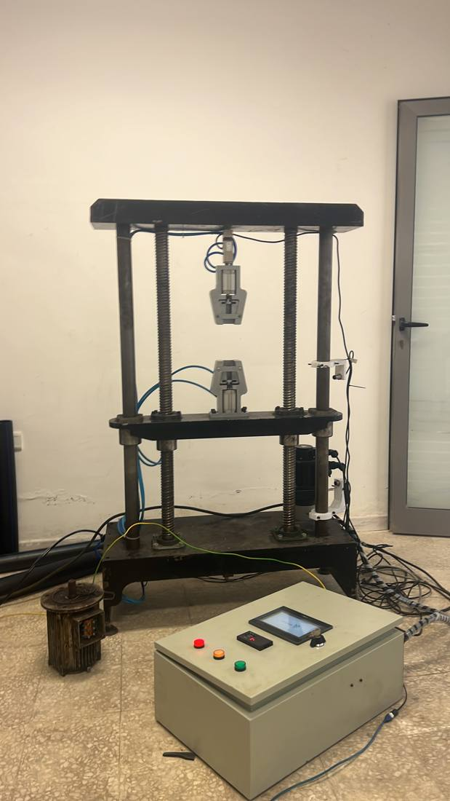
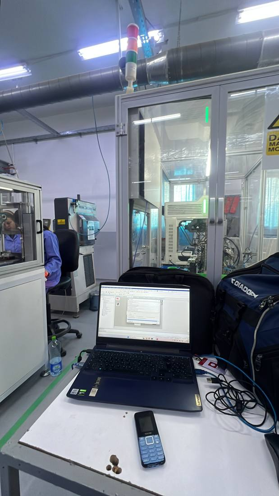
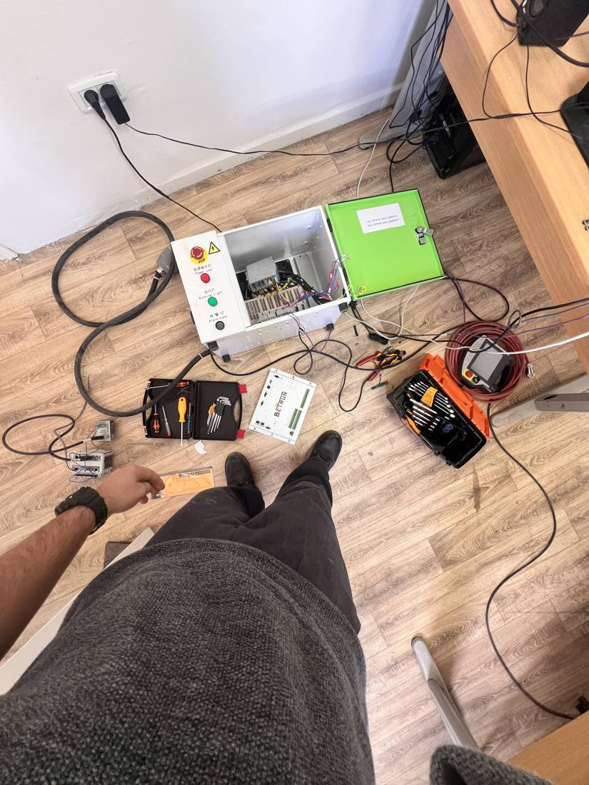
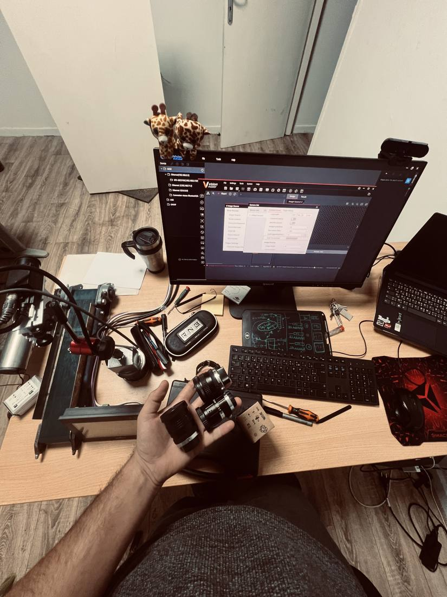
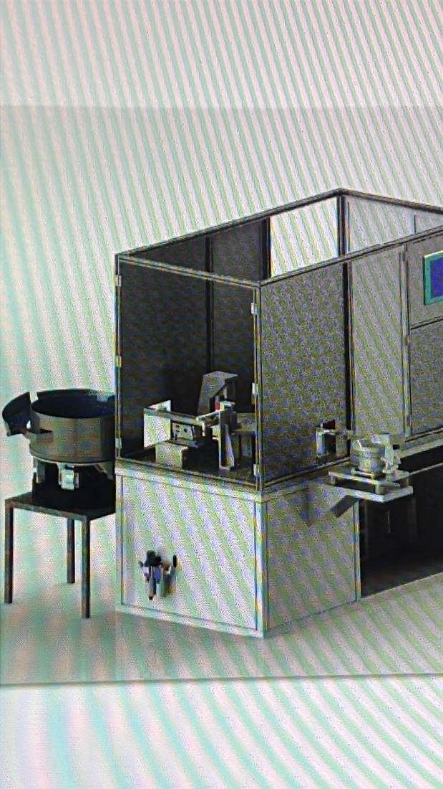
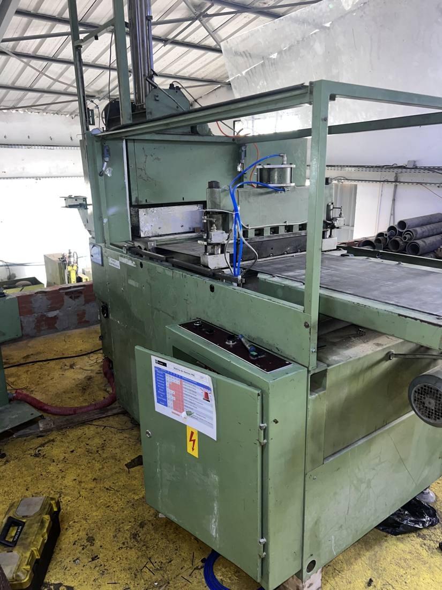
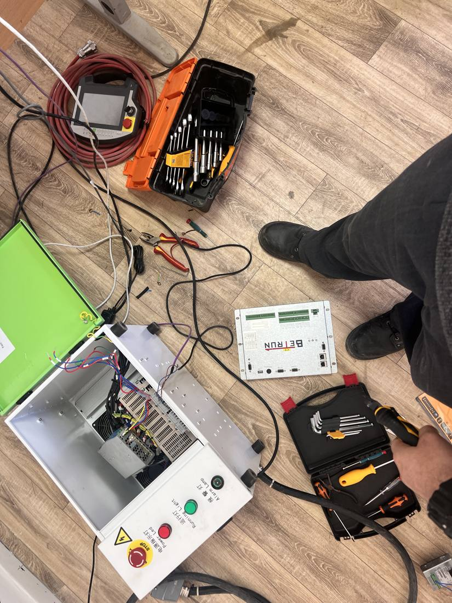
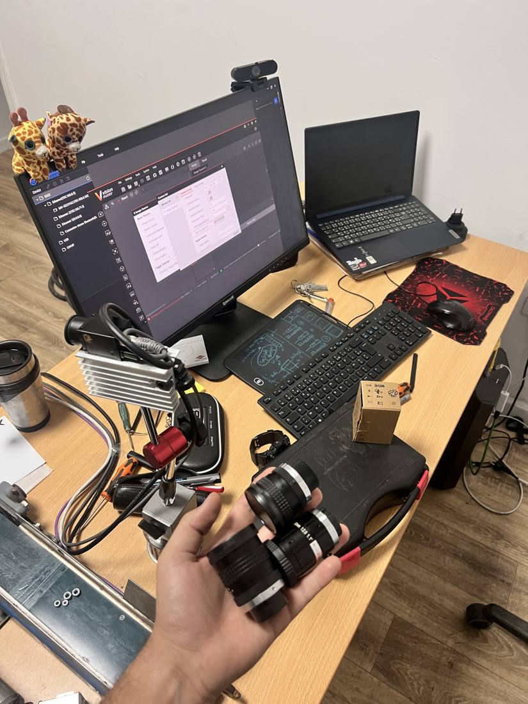
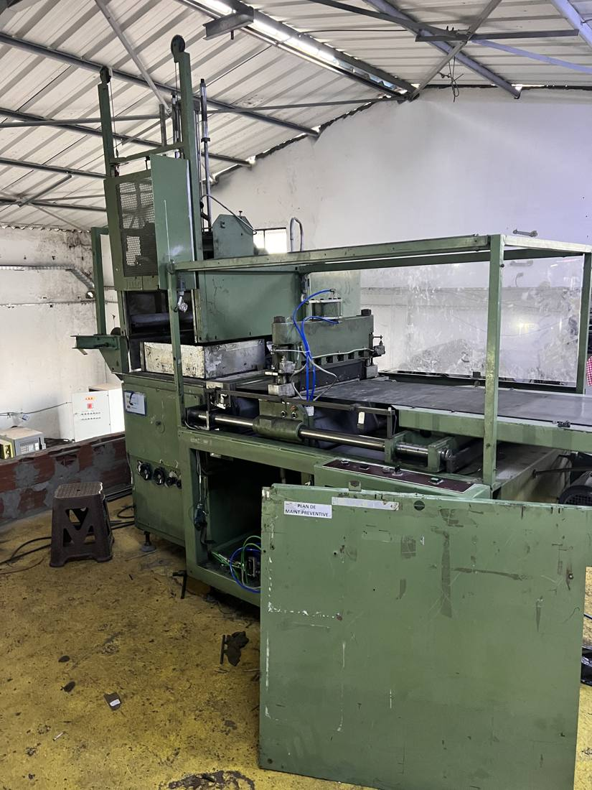
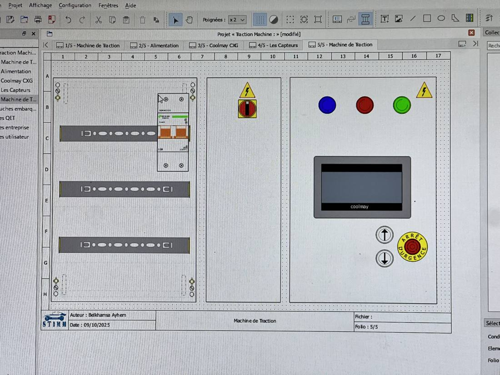
Services
What you actually get, and what to expect from each type of job.
⏚ PLC & Control Panel Retrofits
Line down because of wiring nobody documented, or logic left half‑finished by a previous contractor? I trace the cabinet, rebuild it clean, and reprogram the logic from a known‑good baseline.
You get: a working line, a cabinet you can hand to any technician, and documentation of what changed.
Request a Quote →⚙ Custom Machine Builds
Testing rigs, special‑purpose machines, and one‑off equipment built around your process instead of forcing your process around off‑the‑shelf gear.
You get: a machine sized to your actual throughput, with a custom interface your operators can run day one.
Request a Quote →>_ HMI & Data Systems
Custom C# interfaces for machines that currently give operators no visibility — live readings, logging, and automated reporting instead of a clipboard.
You get: real‑time data on your process and a paper trail you can hand to quality or management.
Request a Quote →◎ Vision & Robotics Integration
Adding pick & place, 6‑DOF arms, or vision‑based quality checks to a line that's currently manual — sized to fit your existing layout and tact time.
You get: fewer manual touchpoints and catches on defects before they leave the line.
Request a Quote →Capabilities
⏚ Automation & Electrical
Control panel diagnostics, tracing corrupted wiring, rewiring power/command circuits, safety relays & interlocks, sensor calibration and load‑cell integration.
⌁ Robotics & Motion Control
Pick & place units, 6‑DOF articulated arms, and Delta robots — trajectory planning, TCP calibration, servo/stepper setup, PWM interfacing.
◎ Machine Vision & Edge AI
Pattern matching, scale/polarity validation, real‑time defect detection, and VLA loops on NVIDIA Jetson for automated piece sorting.
>_ Software & Integration
Custom industrial HMIs and data acquisition in C# (.NET/WinForms/WPF) with automated PDF reporting, plus Python, Django, and Modbus/Serial.
Project Log
Overhauled an assembly line corrupted by multiple prior interventions — rewired and reorganized the control cabinet and reprogrammed control logic from scratch.
Integrated a pick & place robot and a machine vision inspection system for real‑time quality validation.
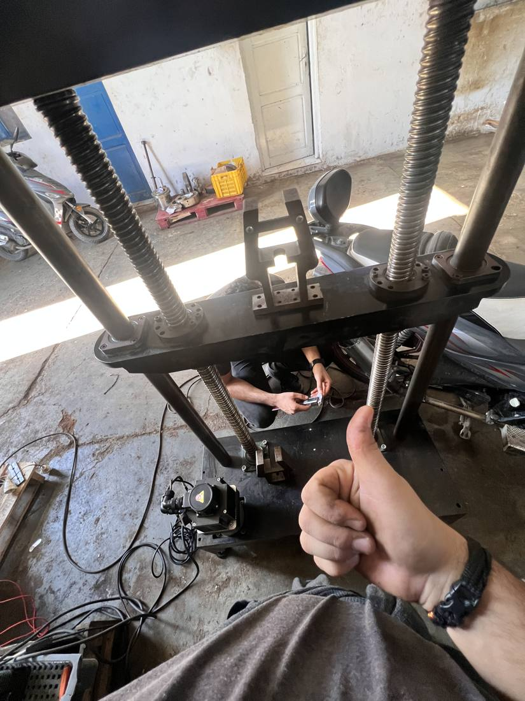
Built a material traction testing machine with a custom C# WinForms interface for operators and real‑time stress logging.
PLC sensors with linear scaling feeding live measurement data into the desktop application.
Designed an edge‑AI sorting loop on an NVIDIA Jetson executing real‑time computer vision processing.
PWM control driving a Delta robot for piece manipulation on the sorting line.
Fine‑tuned force feedback limits, velocity overrides, and motion trajectories on 6‑DOF robotic arms.
Smooth operational handshakes and safe shop‑floor interaction between the arm and operators.
How We Work
Diagnose
Send photos or a description of the line, or arrange an on‑site visit in the Bizerte / Menzel Bourguiba area. I identify the actual cause before proposing a fix.
Scope & Quote
You get a written scope of work and a quote — what's being rebuilt, what hardware is used, and the timeline. No work starts without your sign‑off.
Build & Commission
Cabinet work, programming, and integration happen on your equipment or in‑shop, with regular updates until the line is running and validated.
Handover
You receive documentation of what changed, and direct access to me for follow‑up questions — not a support ticket queue.
Hands‑On Diagnostics
Component‑level troubleshooting on laptops, including Lenovo G30/G50 platforms.
Compressor line repairs on cooling systems.
3D‑designed replacement parts and latches for hardware repair.
Off‑Duty
~ Aquarium Keeping
Active home aquarist balancing tanks and aquatic plant ecosystems — currently keeping Betta, Neon Tetras, a Pleco, and a Mystery Snail.
◈ Motorcycles
Tracking large‑chassis, heavy‑frame entry‑level motorcycles in the Tunisian market.